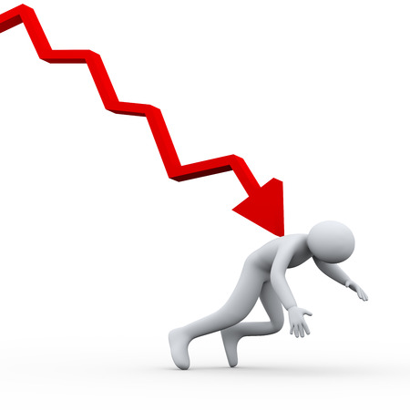

Perfil de los afectados
Dentro del perfil de los afectados buscamos encontrar distintos tipos de personas que se vean, o se hayan visto afectados por nuestra problemática, al ser algo tan específico nos fue un poco complicado, pero nos centramos en las personas que se encargan del tratamiento de los residuos tecnológicos, siendo ellos la población con mayor riesgo.
Estas personas son del común, alguien que está interesado en cada día contaminar un poco menos al planeta, o personas que tienen esto como profesión
Guía de entrevista
- ¿Cuál es su nombre?
- ¿A qué se dedica?
- ¿Cuáles son sus aspiraciones?
- ¿Qué hace usted cuando se encuentra un aparato tecnológico desechado?
- ¿Sabe usted de algún programa especializado de recolección de desechos tecnológicos?
- ¿Qué hace usted en general con los residuos que recolecta?
- ¿Alguna vez usted o su familia ha presentado afectaciones de salud por estar expuesto a químicos dañinos?